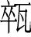
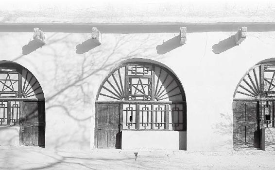

西方按五行归类来讲属金，包括现在说的金、石、玉这些东西，都属金。
金，主肃杀，所以在中原地区往西，一般都是戈壁、沙漠这样的地方，草木不生。中国的地理特点是西高东低，为什么说“滚滚长江东逝水”，就是因为“地势使然”也，西边偏高东边偏低，所以水都往东边流。
“金石之域，沙石之处。”西方的特点就是产玉石，矿产特别丰富，像中国古代青铜器的冶炼、玉石的出产，追到根上都在西方进行的。
西方的昆仑丘，神话中是王母娘娘住的地方，这也是一个文明的诞生地。
经文：
西方者，金玉之域，沙石之处，天地之所收引也。其民陵居而多风，水土刚强。其民不衣而褐荐，其民华食而脂肥。故邪不能伤其形体，其病生于内。其治宜毒药。故毒药者亦从西方来。
西方的地气是“肃杀”
梁冬：“西方者，金玉之域，沙石之处，天地之所收引也。”这句话怎么理解呢？
西方按五行归类来讲属金，包括现在说的金、石、玉这些东西，都属金。
徐文兵：先说“金石之域”。西方按五行归类来讲属金，包括现在说的金、石、玉这些东西，都属金。
金，主肃杀，所以在中原地区往西，一般都是戈壁、沙漠这样的地方，草木不生。中国的地理特点是西高东低，为什么说“滚滚长江东逝水”，就是因为“地势使然”也，西边偏高东边偏低，所以水都往东边流。
金，主肃杀，所以在中原地区往西，一般都是戈壁、沙漠这样的地方，草木不生。
“金石之域，沙石之处。”西方的特点就是产玉石，矿产特别丰富，像中国古代青铜器的冶炼、玉石的出产，追到根上都在西方进行的。
西方的昆仑丘，神话中是王母娘娘住的地方，这也是一个文明的诞生地。
梁冬：“天地之所收引也”，就是说天地是在那里“收引”吗？
徐文兵：这句话说的是日头从东方升起来，从西方降下去。“降下去”有个特点，秋天是主肃杀的，《黄帝内经》上说“秋三月，此谓容平。天气以急，地气以明”，这时也意味着人应该慢慢地收敛。
为什么说要收敛？你想，东方人的皮肤是什么特点？是疏理开放！如果到了西方你皮肤再这么开放，整天接收一些肃杀之气，你肯定长命不了。
东方人的皮肤是什么特点？是疏理开放！如果到了西方你皮肤再这么开放，整天接收一些肃杀之气，你肯定长命不了。
梁冬：所以说，如果东方的人贸然跑到西边去，会落下病来，对吧？
如果东方的人贸然跑到西边去，会落下病来。
徐文兵：就是挨

（cèi，北京方言，打碎的意思）呢。下一句“其民陵居而多风，水土刚强”，讲的是西方人依山陵而住，其地多风，水土的性质又属刚强。前面说了，东方人“安其处”，就是说不用为自己的居处而发愁。为什么？东方草木丰茂啊，你随便砍个树、搭个房子一住，就不用担心了。可到了西方没木头，咱怎么住呢？
梁冬：那就只能“陵居而处”了。
徐文兵：陵居，就是在山岭里掏个窑洞，这很简单。好多电影都到延安取景，延安人住什么房子？就是在丘陵上挖个洞穴。
梁冬：因地制宜、就地取材嘛！好的窑洞是什么？一定要是向阳的，冬暖夏凉。毛主席写《论持久战》，就是坐在窑洞的窗边写的，窗都是纸糊的，但窗子都是向阳的。

西方人因地制宜，就地取材，在丘陵上挖窑洞居住。
“上风上水”对身体有什么影响
“上风上水”是什么意思
徐文兵：“其民陵居而多风，水土刚强。”北京平时刮的风大多是什么风？西北风。住在北京的人们，都把西北方叫什么？上风上水。
梁冬：“上风上水上海淀”，路旁广告都这么写。
徐文兵：这是什么意思呢？水是往低处流的。所谓“上水”，就是水的源头。历史上北京的水不好喝。为什么不好喝？因为北京的水碱比较大，拿来泡茶，泡不出好茶来。那时候皇帝喝的水，都不是北京本地井里打出的水。
水是往低处流的。所谓“上水”，就是水的源头。
北京有个王府井，它就有两口井：一个是甜水井；一个就是那种碱水井，打出来的水没法入口。
北京作为国都，吸引了各方举人来考试，中进士当官。这些人很多都是江南的，江南人有个习惯，爱喝茶，喝的又是绿茶。当他们把江南的绿茶带到北京来喝，拿北京的水冲，那茶是什么滋味？不堪入口。
所以，这些离乡的人在北京既要讲究喝茶，又要好喝，怎么办？只能喝茉莉花茶，用茉莉花的那个香气，把水碱的味儿给压掉。
离乡的人在北京既要讲究喝茶，又要好喝，怎么办？只能喝茉莉花茶，用茉莉花的那个香气，把水碱的味儿给压掉。
茉莉花茶的底子还是绿茶，但它不是发酵茶，所以用碱水泡出来的味道不会那么冲。这就像一个长得不怎么样的女人，她可以通过浓妆艳抹、喷香水来掩盖身体的缺陷，让自己赏心悦目些。
现在，北京的水改成自来水了，将密云水库的水通过京密引水渠引到自来水厂，做成自来水，这个水才好喝。密云水库海拔很高的，如果它决了堤，那冲下来的水能把北京给淹了。
梁冬：那西北方的水水质都比较硬吗？
徐文兵：西北方的水水质都偏硬，而且水碱特别大，水土刚强！而真正能泡出茶性的水必须是什么？软水，只有软水才能把茶香、茶气泡出来。茶是木之精，西北是金石之地，水土刚强，正好把茶气给杀掉了。这就是“摧枯拉朽”，茶肯定不好喝了。
西北方的水水质都偏硬，而且水碱特别大，水土刚强！而真正能泡出茶性的水必须是什么？软水，只有软水才能把茶香、茶气泡出来。茶是木之精，西北是金石之地，水土刚强，正好把茶气给杀掉了。
梁冬：所以，西方的人是不是比较容易得结石？
徐文兵：对，好多人患结石病跟他们所喝的水有关。
至于说西方“多风”，多的这个风，就是西北风。北京上风上水，风从西北方向刮过来，如果北京空气污染厉害的话，就会把这些受污染的空气全刮到东面和南面，所以住在北京东南面的人，会感到空气更污浊一点。
梁冬：这就是说，西北方的人民把空气先污染一遍，再给下风向的人们，是吧？
徐文兵：而且，这个西风肃杀凛冽，容易伤人。它不像我们说的春风、东风那样，温暖有生机，它带的是一种杀气，所以在西北地区生活不容易。
西风肃杀凛冽，容易伤人。它不像我们说的春风、东风那样，温暖有生机，它带的是一种杀气，所以在西北地区生活不容易。
梁冬：“水土刚强”到底说的是什么意思呢？
徐文兵：“水土刚强”，一个是水刚强，一个是土刚强。所谓土刚强，就是说西方的土地非常薄、非常贫瘠，含有腐质、营养成分不多，不像东北黑土地那样，一攥能攥出油来。
正因为它土薄，所以不容易培养出好的植物。有的地方干脆寸草不生，因为土地刚强，就不易培养出柔弱的东西。到处是沙漠、戈壁。沙漠是沙子，戈壁全是石头，这真是应了那句话“金石之域”。
另外，西方的水也刚强。水的矿物质含量、水碱都比较大。在这种地方煮水，茶壶里结的水碱、水垢就会特别多。一壶水煮出来，你就能看见底下厚厚的一层。
现在很多广告宣传说自家卖的矿泉水里面含有很多矿物质。水里面矿物质含得多就好吗？事实上，水太刚强了也不好。
现在很多广告宣传说自家卖的矿泉水里面含有很多矿物质。水里面矿物质含得多就好吗？事实上，水太刚强了也不好。
吃华食、穿粗衣，才可抵御西风
为什么西方人要穿得“粗枝大叶”
梁冬：西方的人是不是也刚强一点呢？“其民陵居而多风，水土刚强，其民不衣而褐荐”，这个“不衣而褐荐”里的“褐”是什么意思？好像说的是粗麻的衣服，对不对？
徐文兵：因为西方多风，对当地人伤害比较大，所以他们的衣着跟中原或者东方的人不一样。中原人或者东方人可以穿丝、穿绸，穿轻薄的东西，西方人则穿得“粗枝大叶”，他们穿粗毛、粗麻织成的衣服。在西方要是穿细软衣服，纯粹就是在找病。
因为西方多风，对当地人伤害比较大，所以他们的衣着跟中原或者东方的人不一样。中原人或者东方人可以穿丝、穿绸，穿轻薄的东西，西方人则穿得“粗枝大叶”，他们穿粗毛、粗麻织成的衣服。
这个“褐”的意思是这样的。古代有句话叫：“披褐怀玉。”就是说，你别看我穿的是麻袋片，但是我怀里边儿有宝贝。这是古代的一种说法，咱现在也有种说法叫“金玉其外，败絮其中”，意思则恰恰相反。“披褐”就是指穿那种用粗布、粗麻做成的衣服，有的时候西方人干脆就穿个羊皮坎肩。
梁冬：基本上就是波西米亚风格。
在西方生活，得多吃肉才行
徐文兵：“其民不衣而褐荐，其民华食而脂肥”，说的是：西方人为了抵御这种刚烈的西风，或者多风的天气，所以吃得很厚重，皮下脂肪特别厚。
在这里，我们说一说“肥”的本意。现在一说减肥，好像就是说减去身上的脂肪。其实，肥的本意绝对不是脂肪多，而是指人肉多、肉厚。北京以前卖驴肉的是这么吆喝的：“驴肉，肥——”你说那个驴整天就是干脚力活，哪有什么油啊？这指的是肉，肉多叫肥，肉少叫瘠，贫瘠的“瘠”。
鲁迅写《狂人日记》，医生给狂人看病，狂人就想：这家伙是个屠夫，要杀我，杀我之前先来揣揣我的肥瘠。意思就是说医生要看看他哪儿肉多哪儿肉少，这其实是一个被迫害妄想的症状。
肥的本意绝对不是脂肪多，而是指人肉多、肉厚。
梁冬：那我们现在所说的“肥”其实指的什么？是指“脂”太多吗？
徐文兵：现在我们说这人肥、油太多，说的就是他的皮下脂肪。这个脂和肪是什么样子？有个成语叫“肤如凝脂”，脂肪是比较凝固的。而现在我们说这个人“肥”呢，是指那些囊肉，软囊囊的那些东西，挺个大肚子。这个状态古代人叫“腴”（yú），肉字边儿，加一个童叟无欺的“叟”，就是指老头儿的那个“叟”。像膏腴、丰腴，这个“腴”就是我们现在说的“肥”，指油太多了。
梁冬：所以，西方的当地人为了避开这些“虚邪贼风”，吃得比较厚重。这就是《黄帝内经》上说的“其民华食而脂肥，故邪不能伤其形体”。
徐文兵：处在西方这种风大、沙土多、沙尘暴频繁的地方，全靠身体的底子厚。只有底子厚，保护力强的人，才能适宜生存。
处在西方这种风大、沙土多、沙尘暴频繁的地方，全靠身体的底子厚。底子厚，保护力强的人，才能适宜生存。
梁冬：一个西方的人突然去了东方得多难受啊，他都发不出来。
水土刚强的地方，结石病最多
梁冬：对于从西边儿来的人，我有一个理解：为什么会在肚子里生那么多病呢？可能是因为外面的东西进不来，不会虚邪贼风；内里的毒也散不去，因为他们的皮肤比较厚，对不对？所以都憋在肚子里面，全成内丹了。
徐文兵：精气所结是丹，如果是病气所结，那就是瘤子，结的是邪恶的东西。
精气所结是丹，如果是病气所结，那就是瘤子，结的是邪恶的东西。
很多人对中医都有不同理解，最常见的一个误区就是：阴阳不分，清浊不分。上期我们讲《金匮要略》时说到“其臭腐”，庄子也说“道在屎尿中”，结果有的人就把自己泡在粪池子里。他不理解经文，又虔诚地要学道，结果就干出了此等荒唐之事。
像我们刚才说的“结丹”，如果我们下焦功能是正常的话，就会腐化生出精气。但如果功能不正常，就会腐败，产生浊气。病人身体里长出的那些瘤子，其实是有地方供养的。谁来供养？《黄帝内经》上说“大肠者传导之官，变化出焉”，是大肠。可见，好的变化是从大肠出来的，坏的变化也是从大肠出来的。
所以说，西方人一定要注意两个问题：一个是肺的问题；一个是大肠的问题。
西方人一定要注意两个问题：一个是肺的问题；一个是大肠的问题。
对身体来说，西方强烈的风首先会影响皮毛，其次是影响鼻子，还会影响到肺和大肠。再加上西方水土刚硬的因素，身体里就很容易出现结石。
现在很多人都生活在水土柔弱的地方，却不甘心，非要让身体里的水土变得刚强。怎么办？补钙。
现在很多人都生活在水土柔弱的地方，却不甘心，非要让身体里的水土变得刚强。怎么办？补钙。
梁冬：补钙其实就是水土刚强吗？
徐文兵：就是，补钙会让身体里的水土变得刚强起来。但大家没考虑到一个问题，补钙补哪儿了？怎么能保证它不变成结石，怎么能保证它不变成骨刺，不变成骨质增生？这些都是人为地给自己身体施加化肥造成的疾患。
要应对这种水土刚强造成的身体不适，也有一个办法。现在甘肃那边儿有的地方很缺水，于是人们就在当地搞水窖，把雨水给存起来，慢慢喝。
但在饮用这个水之前，一是要煮开，也就是消毒。另外一个，还要在里面放点叫“澄（chéng）清”的东西，从而使水里含有的过量矿物质沉淀下来。喝上面的这层清水，就会减少 “病生于内”的可能性。
梁冬：西方人腠①（còu）理比较紧凑，肌肤也比较厚，所以外邪进不来，内毒也散不出去，容易长瘤。而那些平时病怏怏的，容易感冒的人，反而很少长各种瘤。
西方人腠理比较紧凑，肌肤也比较厚，所以外邪进不来，内毒也散不出去，容易长瘤。而那些平时病怏怏的，容易感冒的人，反而很少长各种瘤。
①腠：肌肉的纹理。
西方人的很多病都在肚子里
“华食”吃多了，易得肠胃病
梁冬：“故邪不能伤其形体，其病生于内。其治宜毒药”，西方人由于腠理比较紧密而且水土刚强，所以身体的很多问题都“留”在肚子里面，西方人便发明了用药在肚子里面解决问题的一套策略与方法，“故毒药者亦从西方来”。
西方人由于腠理比较紧密而且水土刚强，所以身体的很多问题都“留”在肚子里面，西方人便发明了用药在肚子里面解决问题的一套策略与方法，故毒药者亦从西方来。
徐文兵：相比于东方人，西方人不会得疮疡病，因为他们自我保护得非常好。另外，所谓的“华食”就是说他们吃的东西品种比较杂、比较多。华嘛！花叉着来，就是花开的那个样子。
梁冬：那么西方人会得什么病呢？
徐文兵：东方人就吃鱼盐，总吃一种东西，偏了，往往会造成五脏六腑的失衡；而西方的人是“华食”，容易得肠胃疾病。
要治疗肠胃病，也就是我们讲的六腑病，东方人用砭石。现在的刮痧就相当于砭石疗法。而古代人想破脓，用的是哪种利器？就是小针刀，或者是把一个瓷碗摔地上，用瓷碗那锋利的边“嗖”一下划破，这都叫砭石疗法。
但对西方人来说，既然病不在表，在收引，在自己的肠胃里面，那用的治疗方法就不是外治法，而是内治法。这个内治法是指服药。
“毒”是指凝聚起来的那种能量
徐文兵：关于服药，《内经》上说“治宜毒药”，我们来讲讲这个“毒药”的“毒”是什么意思。
梁冬：其实，我觉得毒可能就是指不平和、不中和，有偏性的药。
徐文兵：我们说这个东西有毒，是指它的偏性。但“毒”的真正含意呢，是指凝聚起来的那种力量。
我们说这个东西有毒，是指它的偏性。但“毒”的真正含意呢，是指凝聚起来的那种力量。
比如说一个人眼毒，是说他那个眼神凝聚起来，好像一眼就能把人看透、看穿了。如果一个人神是散的，看东西眼还是花的，你说这人眼毒不大可能。
梁冬：我们还说这人手毒，手毒就是暗劲儿很重，是吧？
徐文兵：就说手上那个劲儿能凝聚到一点。“哎呀，你手这么毒！”“下手这么狠毒！”狠是狠，毒是毒，古代这个毒的意思是指凝聚起来的那个能量。
梁冬：压强比较大！
徐文兵：那么，我们所谓的“以毒攻毒”是指什么呀？是说用另外一种相反的凝聚起来的能量，去中和现有的毒，这叫“以毒攻毒”。通俗点说，你体内已经有一种凝聚起来的能量，我用另外一种能量去平衡它，叫以毒攻毒。
那么，我们所谓的“以毒攻毒”是指什么呀？是说用另外一种相反的凝聚起来的能量，去中和现有的毒，这叫“以毒攻毒”。
解毒和释毒的学问
徐文兵：治毒还有一个办法，叫解毒。什么叫解毒？
梁冬：把它化开是不是？
徐文兵：我们经常说解释，请你解释一下，什么叫解？什么叫释？
梁冬：“解”是不是有点像物理的感觉，一个扣一个扣地打开；而“释”呢，有点冰释前嫌的意味，用温度把它化开。
徐文兵：靠点谱了。其实，我们都有这个慧根，就是大家没往这儿想。
解和释不一样。就像“庖丁解牛”，你要写成庖丁释牛就不对了。从这个角度来看，解和释有什么区别？
梁冬：解是物理手法，释是化学手法。
徐文兵：不对，有点接近，但是不大对。
梁冬：那到底这个“解释”是如何解释的呢？请徐老师和我们解释一下“解释”。
徐文兵：碰到每个问题时，我就一直在想。有时候想通了，特高兴；有时候想不通，就只好接着再想。
梁冬：闻道则喜嘛。
徐文兵：“庖丁解牛（páo dīng jiě niú）”，你看这个“解”，它用了个“角”，上边还有个“刀”，是吧？这个“解”是什么？从内部瓦解。对于一头牛，你得从内部给它剔开，筋是筋，肉是肉，骨是骨，给它分开，从内部给它瓦解掉，这叫“解”。
而“释”是什么意思呢？我拿绳子给你捆住了，那不叫解开，那叫释开。我们现在选的《黄帝内经》的这个版本，是唐朝太医令——王冰编辑的，隋朝有个叫杨上善的人，他编的是另外一本，叫《黄帝内经·太素》。
王冰潜心研究《素问》达12年之久。在写《黄帝内经》这个版本序言的时候，他第一句话叫：“夫释缚脱艰，全真导气，拯黎元于仁寿。”
“释缚脱艰”，什么叫“释缚”？就是把外在强加给你束缚心性的那种东西给解脱开，这叫“释”，从内部给它分开则叫“解”。
“释缚脱艰”，什么叫“释缚”？就是把外在强加给你束缚心性的那种东西给解脱开，这叫“释”；从内部给它分开则叫“解”。
另外，这个“释”还有稀释的意思。它本来是凝聚起来的毒，把它散开了，就没毒了。它就不具有那种“好钢用在刀刃上”伤人的可能性了。
你看警察驱赶那些闹事儿的，外国警察拿高压水龙头镇压，而我们中国警察去了，就喊：“散了，散了。”
梁冬：应该喊：“解了，解了。”
徐文兵：人一散了，它就不具有任何攻击性和伤害性了，因为这些东西要聚在一起才会有可能形成毒。
所以我们经常说的“解毒”，有的是从内部给它瓦解掉，这叫“解”；而你从外部给它松绑或把它的浓度给降低了，这就叫“释”毒。
所以我们经常说的“解毒”，有的是从内部给它瓦解掉，这叫“解”；而你从外部给它松绑或把它的浓度给降低了，这就叫“释”毒。
梁冬：那“大解”“小解”的意思呢？
徐文兵：“大解，小解”其实是用错词了。当年，明朝搞了个大移民。山西这个地方是“躲在小楼成一统，管他春夏与秋冬”，不管外边的事，所以山西一直是安定的，人口繁衍得很好。可其他地方战乱频繁，人口稀少，所以明朝皇帝就强迫山西人往其他地方迁。
怎么迁？就是捆上你的手，拴根长绳子，强迫你走。途中你要去大小便怎么办？就得解手。他们对官兵说：“求求您把我手解开，我去撒尿。”官兵就问了：“你是大解还是小解？”如果是小解，松一下就行了，大解就全松开。
其实按我刚才讲的，“解手”应该叫“释手”，把外在束缚给分开，让人更自由一些。
如何利用药的偏性来纠正人的偏性
中药最好的产地在西方
徐文兵：西方人大多皮糙肉厚，穿的衣服都是麻的。治疗西方人的病，如果病在肠胃，用口服毒和药。
西方的毒药是最地道的药材，大部分中药最好的产地都是西方，特别是川药！
西方的毒药是最地道的药材，大部分中药最好的产地都是西方，特别是川药！
梁冬：对，附子。
徐文兵：现在医生开药，川黄连、川厚朴、川贝、川芎（xiōng），都是四川出产的最好。为什么？“故毒药者亦从西方来”。
自打“扶阳派”逐渐闻名以后，附子也被大家所熟知，急救、回阳救逆的时候离不开这个药。
自打“扶阳派”逐渐闻名以后，附子也被大家所熟知，急救、回阳救逆的时候离不开这个药。
但是，国家药典上规定，附子用量不能超过9克。所以现在医生们都不敢用。不敢用意味着什么？很多人本来能被救过来，却因此白白地送命，很可惜。
我刚才说“毒药者亦从西方来”，还有一个意思。不知大家发现没有，很多中药的原产地并不是中国。所有带什么“胡”“番”这些字眼的药，比如说胡椒、胡麻、胡瓜、藏红花、番茄、番木瓜……尤其是香料药，都是从西方阿拉伯地区过来的。
中国有一条丝绸之路，出口丝绸、瓷器，换回来的全是这些香料。福建泉州是海上丝绸之路的一个海港，阿拉伯国家很多香料药都是从这里进口到了中国。
而且，这些进口的药都是很有名的中药。比如说现在用来止痛、活血化瘀的中药—“乳香没药（mò yào）”，特有意思，没药叫“Myrrh”，英文音译过来的。中东地区有一种树叫“Myrrh”，根据《圣经》记载，耶稣出生的时候，有三个“King”去探望他，分别带着不同的礼物，其中一个King拿的就是“没药”！
这个“没药”和“乳香”都是“Myrrh”这种树流出来的树胶，凝固之后再做成的药，止痛、活血化瘀效果特别好。
这个“没药”和“乳香”都是“Myrrh”这种树流出来的树胶，凝固之后再做成药，止痛、活血化瘀效果特别好。
一些基督教、天主教教堂里都有个小炉子，底下放个小蜡烛点着，上面放着树胶颗粒，燃烧放出阵阵香味儿，这些树胶就是乳香和没药。
西方人把它用作香料，而到了中国以后，它便成了中药。这就涉及中药的定义，什么叫中药？
梁冬：不是中国产的药，而是以中医思想来用的药！
徐文兵：高明！所谓中药者，是在中医理论指导下用的药物，不管它产自哪儿。砂仁、茴香，这些药都是从南方（包括赤道以南、赤道中）或者西方国家过来的，但这些东西为我们所用，在中医的理论指导下去用，就叫中药。
所谓中药者，是在中医理论指导下用的药物，不管它产自哪儿。
可惜，现在的医学是在用西医的理论来指导用药，先分析它有哪些化学成分，得出结论再来用药。这么用挺好，我们不反对，但是这绝不是中药！
现在的社会，“智”在发达，“慧”在没落
徐文兵：说到这，很多人可能会跟我抬杠：“那都是药嘛，你管它怎么用呢！”意思是说，药是恒定不变的，怎么用它都一样，都有那种药效。
梁冬：此言差矣！
徐文兵：举个例子，同样的油、调料、菜、肉，普通人炒盘菜跟厨师炒出来的能一样吗？再举个例子，下棋时，大家用的都是同样的棋子，为什么会有输有赢？
现在的社会，“智”在发达，“慧”在没落，大家都去关心有形有质的东西，而忽略了人的思想。有了飞机大炮不一定能打胜仗，操作者怎么用它很重要。而且，领导的指导思想是最关键的。为什么民国以后会出现军阀混战？因为大部分军阀首领都成不了气候——就是个军人，而不是政治家。
现在的社会，“智”在发达，“慧”在没落，大家都去关心有形有质的东西，而忽略了人的思想。
梁冬：对，阎锡山就站在山西的角度看问题，陈炯明就站在广东的角度看问题，他们都没有站在国家的角度去看问题。
徐文兵：军阀首领会觉得，我的军队战斗力强，哪有钱就打哪，哪有地盘就占哪。他们追逐这些蝇头小利，缺乏战略的高度。而真正有战略高度的领导者，会为了全民族的利益，为了全中国的利益而战。
要是真正的政治家来指挥这些职业军人打仗，那就不一样了。他们就会考虑：哪些仗该打，哪些仗不能打。这就叫战略思想。
中药的使用也是一样，不懂中医理论去用药，与在中医理论指导下用药，产生的效果完全不同。
越有个性的药，越能治大病
梁冬：所谓的毒药都是以毒攻毒的，大部分的药都是不平的，否则怎么做药呢？
所谓的毒药都是以毒攻毒的，大部分的药都是不平的，否则怎么做药呢？
徐文兵：对，如果药没有偏性，那么它也无法纠正病人身体里出现的偏性。
中药里面有个“和事佬”叫“甘草”。“甘草”这味药好像在什么药方里都能出现，百搭。但“甘草”能治病吗？有些病它也治不了。
而真正治病的药，像大黄、附子，它们都是鲜明的、个性的，具有毒性的药。附子有毒，大黄也有毒，细辛也有毒，但一个善用药的人，就像一个善用兵的将军一样，知道这个人的特点，会给他一个发挥特点的机会。
附子有毒，大黄也有毒，细辛也有毒，但一个善用药的人，就像一个善用兵的将军一样，知道这个人的特点，会给他一个发挥特点的机会。
但这些人、这些药到了“和平”时期，就很危险。好多人等到战争结束了，“飞鸟尽、良弓藏；狡兔死、走狗烹”。没仗可打了，就得给这些好战分子一个好的管束，不然的话，这些人就会闹事儿。
美国巴顿将军为什么后来被免职了？因为到和平时期了，巴顿这个好战分子还想打、还想闹，总统艾森豪威尔干脆就给他免掉。这其实就是把他的“毒性”给消掉。
“其病生于内，其治宜毒药。故毒药者亦从西方来。”所谓是药就有三分毒，中药内服的这些学问和技术实际上是从西方过来的。
所谓是药就有三分毒，中药内服的这些学问和技术实际上是从西方过来的。
梁冬：所以说，欧阳锋是得大道者。
徐文兵：有道理！东邪西毒！金庸老师还是相当有文化的！
不按中医思想来吃，再好的中药也成毒药
徐文兵：前一段时间，有大夫用龙胆泻肝汤治病，结果病人吃出肾坏死、肾结石。有人就怀疑是中医有问题。出医疗事故了，就说中药有问题，这种看法肯定是片面的。但这种现象特别普遍，尤其在日本表现得十分典型。
日本人很喜欢“汉方”，他们能够把《伤寒论》里所有条文、所有方子的用量都研究到极致，甚至连伤寒论有多少字都知道。但这都是“只见树木，不见森林”。
日本人很喜欢“汉方”，他们能够把《伤寒论》里所有条文、所有方子的用量都研究到极致，甚至连伤寒论有多少字都知道。但这都是只见树木不见森林。
比如说，中医用“白虎汤”能退烧，那么日本人就会去研究“白虎汤”里有什么东西：石膏、粳米。研究半天纳闷了，这怎么能抗病毒、抗感染呢？他们研究不明白这个问题，因为他们的思维方法本身就错了。
用这种方法去搞中医研究，反而把中医都搞坏了。在日本出现了一起这样的医疗事故——用汉方“小柴胡汤”出现大规模的肝损害。制药厂把“小柴胡汤”制成那种非常好的冲剂，就跟雀巢咖啡似的，即冲即饮，技术很高明。但是医生不知道“小柴胡汤”的使用禁忌，只要是肝炎，符合这个“往来寒热，心烦喜呕，默默不欲饮食”的症状，都给病人用“小柴胡汤”，不管虚实寒热。结果把好多人吃得肝纤维化、肝硬化、肝坏死，搞得那个制药厂也倒闭了。
最后，这些人不反思自己对中医理论不精通，却说什么中药有害，这又是一个极大的错误。不懂中医理论搞中药，那是“人祸”而不是“药祸”。
不懂中医理论搞中药，那是“人祸”而不是“药祸”。
梁冬：产业界有一个非常有意思的故事。IBM以前是卖电脑的，后来却把电脑卖给联想。因为人家卖的是Total Solution，卖的是整体解决方案。也就是说，谁要生产什么设备，系统提成用Intel、联想、Cisco的，最后解决问题，就得用IBM。所以，IBM就变成卖思想了，不再看器、术、法，而是看道的层面，从此完成了一个有意思的转型。
徐文兵：很多人说中药是中医的精华，其实，中医离开中药照样可以生存。这就跟高手比武一样，你用你的龙泉剑，我用我的青冥剑，大家根本没必要去关注那个剑到底怎么样，重点是招式。所以说，中药背后的中医思想很重要。
20世纪，反中医派流传一句话“废医存药”，就是说中药是有效的，中医是没用的，把中药保留下来就可以了。这就相当于把厨子都杀了，把菜都保留下来，那怎么做菜呢？
20世纪，反中医派流传一句话“废医存药”，就是说中药是有效的，中医是没用的，把中药保留下来就可以了。这就相当于把厨子都杀了，把菜都保留下来，那怎么做菜呢？
梁冬：有道理！说到此处，徐老师，我有个技术问题想问一下您。有一天晚上，我夜读《本草纲目》，然后看到上面说无论什么东西都可以做药。饭是一味药，人的头发也是一味药，其中还讲到了一味药叫“人中黄”，什么东西叫人中黄？
徐文兵：是把甘草末放到一个竹筒里，然后放到粪坑里去浸。
梁冬：这个“人中黄”的制法有时间限制，我看书上说好像得冬天浸，春天出，是吧？
徐文兵：对，就是要得“腐气”，就是那个腐臭之气。它是治疗那种大肠杆菌已经全部被干掉，吃什么拉什么的病。有这么个笑话，挺恶心，但是有道理。有个病人说：“大夫，我吃什么拉什么。吃苹果拉苹果，吃米饭拉米饭。”你知道大夫说一句什么话？
梁冬：你拉什么再吃什么吧。
徐文兵：大夫说：“那你只能吃屎了。”
梁冬：哈哈哈。
徐文兵：对呀，吃屎就拉屎嘛！这话很糙，但是利用这种腐臭、发酵的东西去培养人体那些有益菌，在治疗上是颇有道理的。“人中黄”就是说的这种东西。